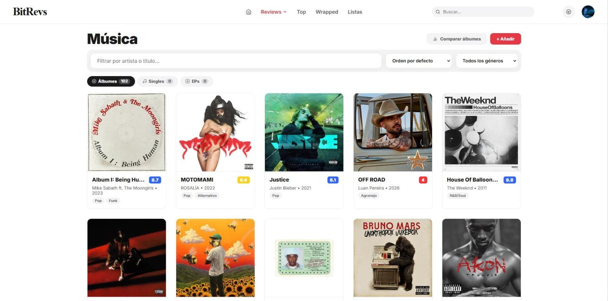
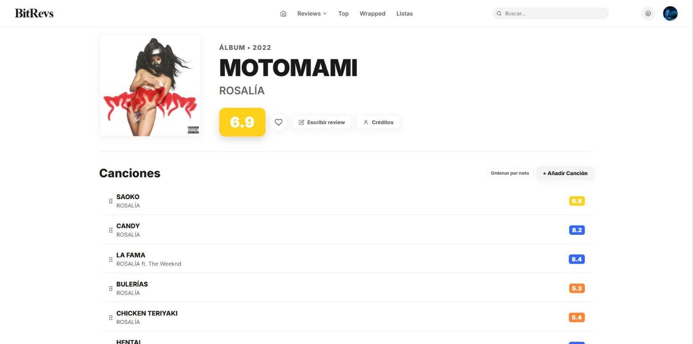
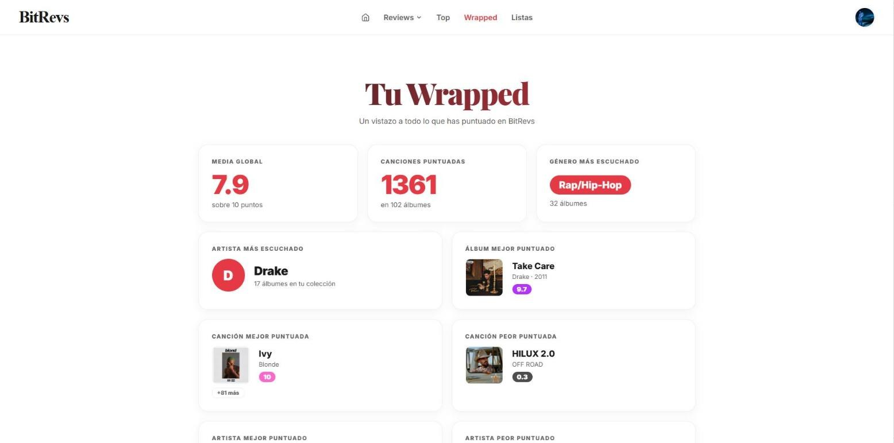
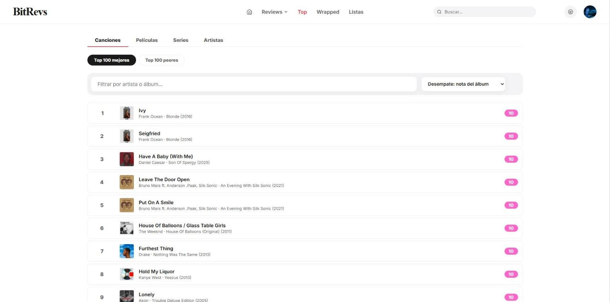

BitRevs
Un archivo de todo lo que escucho y veo, puntuado canción a canción.

- Qué es
- Web personal de reseñas de música, cine y series
- Estado
- En uso diario, en desarrollo continuo
- Stack
- JavaScript sin framework, Firebase Auth, Firestore, API de Spotify
- Despliegue
- GitHub Pages
- Enlace
- Abrir BitRevs
Puntuar un disco entero con un solo número es mentir un poco.
Llevaba años con la misma costumbre: acababa un disco, me quedaba con dos o tres canciones y se me olvidaba el resto. Al cabo de un año no recordaba si ese álbum me había gustado de verdad o solo me había gustado el single.
Las apps que probé daban una nota al álbum y poco más. Yo quería lo contrario: puntuar cada canción por separado y que la nota del disco saliera de ahí, no al revés. Así la media dice algo. Un álbum con tres joyas y ocho rellenos deja de parecerse a uno que es bueno de principio a fin.
Lo mismo con el cine. Quería poder volver a una película meses después y encontrarme la frase que me marcó y el fotograma que guardé, no solo un número del uno al diez.
Así que lo construí. Primero fue una tabla de álbumes, y poco a poco se ha convertido en un archivo personal con mi historia de escucha dentro.
La reseña empieza en la canción, no en el disco.
Cuando añado un álbum busco el disco en Spotify y la app rellena sola la portada, el artista, el año, el tipo de lanzamiento y el tracklist completo. Lo que antes eran diez minutos escribiendo títulos a mano ahora son dos clics.
A partir de ahí el trabajo es escuchar. Cada canción tiene su nota, y cada nota deja rastro: si dentro de seis meses cambio de opinión sobre un tema, la app guarda el historial y puedo ver cómo ha subido o bajado con el tiempo. Los interludios se marcan como tales y no cuentan para la media, porque puntuar un interludio de cuarenta segundos como si fuera una canción distorsiona el disco entero.
También hay sitio para los créditos: quién produjo, quién escribió, quién aparece como invitado. Esa información luego alimenta las estadísticas de artista, así que un productor o un colaborador acumula su propio historial sin que yo tenga que llevar la cuenta.

 CapturaHistorial de notas de una canción a lo largo del tiempo
CapturaHistorial de notas de una canción a lo largo del tiempo

Lo interesante no es la nota. Es ver cómo cambia.
Diez años de escucha, ordenados de todas las formas posibles.
Cada dato que entra se reutiliza en varios sitios. Una canción puntuada mueve la media del álbum, la del artista, la del género y el ranking global, todo a la vez. Estas son las secciones que han ido saliendo de ahí.
Música
Todos los álbumes en rejilla, con filtros por artista, título, año, nota y género, y un interruptor para separar álbumes de sencillos.
Películas y series
Fichas con director, duración, género y país. Cada una tiene una sección de escenas donde guardo frases con la tipografía que les pega y fotogramas con el subtítulo encima, como si fuera una captura de la propia película.
Artistas
Página propia con banner, foto y estadísticas calculadas: media de sus canciones, discografía ordenada y sus mejores temas. Las colaboraciones cuentan, así que un artista con tres featurings tiene su ficha aunque no tenga ningún álbum mío.
Top
Ranking de canciones, álbumes, películas y artistas. Guarda una foto del ranking cada día, así que al lado de cada posición se ve si ha subido, bajado o se mantiene desde ayer. Es lo más parecido a una lista de éxitos personal.
Wrapped
Resumen anual: media global, canciones puntuadas, mejor y peor álbum, artista y género favoritos, director preferido, país más visto, distribución de notas y una gráfica de álbumes por mes.
Colecciones y listas
Agrupaciones temáticas con portada de collage automática, color propio y banner. Cada elemento puede mostrarse en un formato distinto dentro de la misma colección: solo portada, portada con título, ficha completa u horizontal.
Explorar
Páginas de género musical, género cinematográfico, director y país, cada una con sus propias estadísticas. Sirve para preguntas que no sabía que quería responder, como qué nota media le pongo al cine coreano.
Comparador
Dos artistas o dos álbumes enfrentados por sus números. Nació de una discusión y se quedó.
Línea de tiempo
Todo lo puntuado en orden cronológico, agrupado por año y mes, filtrable por tipo. Es la parte que más uso y la que menos pensaba usar.


CapturaPágina de artista con banner, foto y estadísticas
Sin framework, y con una mudanza de base de datos por el medio.
Todo es HTML, CSS y JavaScript a pelo. Ningún framework, ninguna compilación, ningún paso de build: se abre el archivo y funciona. Lo elegí así por terquedad al principio y lo mantengo por convicción, porque me obliga a entender qué hace cada línea en vez de delegarlo.
La primera versión guardaba todo en IndexedDB, la base de datos del propio navegador. Funcionaba bien hasta el día que quise consultar mis notas desde el móvil y me di cuenta del problema: los datos vivían en un solo ordenador y en un solo navegador. Si lo borraba, desaparecían.
La segunda versión los movió a Firestore, con Firebase Auth para la sesión. Cada usuario tiene su propio árbol de datos y las notas me siguen a cualquier dispositivo. La migración fue su propia página: leer de IndexedDB, limpiar los campos vacíos que Firestore rechaza, y escribirlo todo arriba sin perder ningún identificador por el camino.
Encima va la API de Spotify, con su propio flujo de autenticación, para buscar discos y traer metadatos y géneros. Y por debajo, detalles que no se ven pero que marcan la diferencia al usarlo: diálogos propios en lugar de los alert del navegador, iconos en SVG con la paleta del sitio, y la misma gramática visual en todas las páginas.
Tres cosas que no esperaba.
Migrar datos da más miedo que escribirlos. Crear la base de datos fue una tarde. Mover años de notas de un sitio a otro sin perder nada me llevó bastante más, y fue donde de verdad entendí por qué en sistemas se insiste tanto con las copias de seguridad antes de tocar nada.
El modelo de datos decide lo que podrás hacer dentro de un año. Guardar los créditos de cada canción parecía un capricho. Gracias a eso las estadísticas de artista salieron casi solas meses después. Lo que no guardé a tiempo son los años que tardé en volver a reconstruir.
Una app personal se usa de verdad o no se usa. Las secciones que pensé que serían el centro apenas las abro. La línea de tiempo, que añadí de relleno, es la que más uso. No hay forma de saberlo sin construirla y vivir con ella unas semanas.

Sigue creciendo cada semana.
Lo uso casi a diario, que para un proyecto personal es el único indicador que vale. Lo siguiente en la lista es un modo galería para las portadas, afinar el ranking para que pesen más las escuchas recientes, y una versión del Wrapped que se pueda compartir como imagen.
No está pensado para que lo use nadie más. Pero si alguien quiere ver cómo se construye un archivo personal que aguanta años de datos, el código está abierto.
BitRevs forma parte del MarcVerse, el conjunto de proyectos propios donde acabo metiendo todo lo que colecciono.